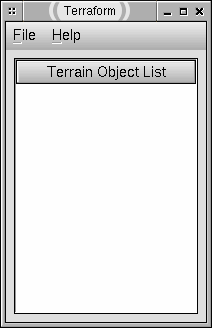
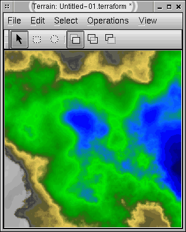
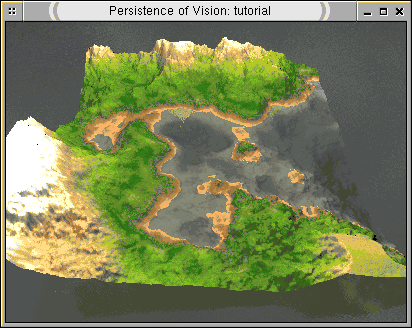

Tutorial Terraform
Auteur: David A. Bartold, Traduction: Raymond Ostertag
C'est un petit tutorial destiné aux débutants.
Voici la fenêtre principale :

La fenêtre principale permet à l'utilisateur d'ouvrir des
fenêtres pour les terrains. L'utilisateur peut charger un terrain
depuis un fichier ou en créer un nouveau.
Etape 1:
Il y a différents algorithmes disponibles pour générer
un nouveau terrain. Nous allons laisser Terraform en choisir un en sélectionnant
Fichier > Nouveau > Aléatoire. C'est la façon la plus simple
de faire un nouveau terrain.
La fenêtre du terrain ressemblera à ceci :

Etape 2 :
Sélectionnez le modèle de vue 3D filaire en choisissant Vue
> Type > 3D filaire. Déplacez le curseur dans la fenêtre
pour tourner le modèle filaire comme souhaité. Essayez d'autres
modèles de vue.
Vue 3D filaire :

Etape 3 :
Allez à votre fenêtre principale et sélectionnez Fichier
> Options. L'onglet POV-Ray tab fait apparaitre le nom de l'exécutable.
Assurez-vous qu'il pointe vers une version compatible X-window de POV-Ray
3.1. Terraform va automatiquement chercher le bon exécutable si
vous cliquez sur le bouton "...". Cette option est sauvegardée d'une
session à l'autre ainsi vous n'avez à faire celà qu'une
fois.
Etape 4 :
Allez à votre fenêtre de terrain, sélectionnez Fichier
> Rendu > POV-Ray et une fenêtre de rendu devrait apparaitre.
Si vous avez un message d'erreur c'est qu'il y a eu un problème
durant l'exécution de POV-Ray. Vous trouverez plus d'informations
en cliquant sur le bouton "Détails". Consultez la documentation
de POV-Ray si l'exécutable est trouvé mais POV-Ray rapporte
une erreur.
La fenêtre de rendu du terrain de POV-Ray :

Félicitations !
Vous avez générez et rendu votre première scène.
De là, vous pourriez souhaitez la sauvegarder dans un fichier
*.terraform ou accomplir plusieurs opérations sur le terrain. Consultez
le Guide Utilisateur pour plus d'informations.